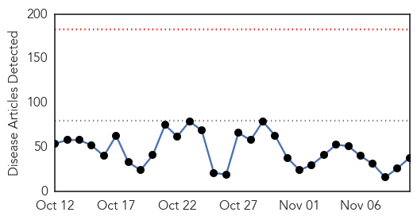
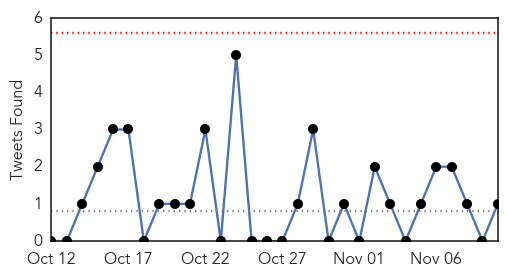
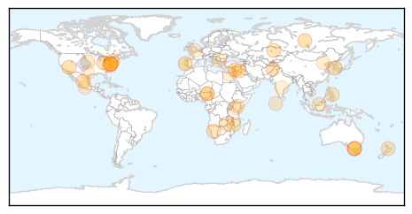

30 Day Trends
Web: 0 alerts, 0 warnings
Twitter: 0 alerts, 0 warnings
Top Articles:
- 0.988
- Legionnaires’ outbreak kills four in Portugal, more than 160 ill
- 0.926
- Blood-sucking ‘kissing bug’ sees 300k Americans infected with deadly disease — RT USA
- 0.923
- Shingles vaccine worth considering to avoid painful condition
- 0.917
- Chicago Tribune
- 0.917
- Chicago Tribune
- 0.917
- Chicago Tribune
- 0.917
- Chicago Tribune
- 0.917
- Chicago Tribune
- 0.866
- U.S., allies launch barrage of airstrikes against Islamic State -CENTCOM
- 0.866
- Five nuclear engineers, one of them Iranian, killed in Syria
- 0.866
- German foreign minister urges all in Ukraine conflict to respect ceasefire
- 0.866
- Bombs kill at least 10 police in east Afghanistan
- 0.848
- Deadly 'Kissing Bug' Has Infected 300,000 People in U.S.
- 0.819
- South Africa makes great progress in malaria control
- 0.792
- Pneumonia Vaccines May Have Cut Kids’ Hospital Admissions
- 0.766
- Anti-Typhoid Gene Found, May Improve Vaccines: Study
- 0.764
- Anti-typhoid gene found, may improve vaccines
- 0.761
- Health warning for Lake Hakanoa
- 0.755
- KRNV, Reno, NV
- 0.751
- Malawi Nyasa Times – Malawi breaking news in Malawi
- 0.741
- Anti-typhoid gene found, may improve vaccines – study
- 0.740
- CYANOBACTERIAL WARNING: Health warning for Lake Hakanoa
- 0.727
- Farmers Hiding African Swine Fever Infected Pigs in Zambia
- 0.719
- No Need for Cancer Watch in Cirrhotic Wilson's Disease
- 0.715
- There's a virus that makes you stupid, scientists say
- 0.702
- NBI probes DOH execs over vaccine purchase
- 0.650
- Need to spread Ayurveda all over the world: Health experts
- 0.647
- Need to spread Ayurveda all over the world: Health experts
- 0.551
- Mexico’s president slams missing student protests
- 0.551
- China and Japan in landmark talks to ease tensions
- 0.549
- Bomb blast kills dozens of school children in Nigeria
- 0.549
- Serbian, Albanian PMs in new rift over self-rule for Kosovo
- 0.549
- Egypt's Sinai jihadists vow allegiance to IS group
- 0.529
- Kenya : Borders put Kenya at high risk of polio, says WHO
- 0.515
- Have You Considered Epilepsy Surgery?
- 0.512
- Mass Sterilization Campaign: UN Laces Tetanus Vaccine With Drug to Cause Miscarriages
- 0.506
- Health dominates PA session as three bills made law
- 0.501
- Ebola nurse to remain a voice against quarantines
Top Tweets:
- 0.665
- RT: T7: Our flu and heartdisease page includes a vaccine finder – enter your zip code and go! http://t.co/SAPd42EnOC flu…
Web/News Articles
Tweets
Article Locations
Article Confidences